PROBE OVERVIEW
FOCUS / BASS / 180–260 HZ
5 / 5 LINKED
ADVISOR
5 / 5
- PRIORITY
- Bass against piano, 180–260 Hz
- LIKELY CAUSE
- Bass carries 3.4 dB too much there
- SMALLEST TEST
- Bass −2 dB at 220 Hz, Q 1.2
- LISTEN FOR
- Piano left hand, bars 33–41
- THEN
- Re-check the same passage
TEST READY / BASS −2.0 DB @ 220 HZ / Q 1.2

PROTECTED
SPECTRUM POST · COMMITTED
DRAFT
Band 3 · 240 Hz · −1.5 → −3.0 dB · Q 1.6